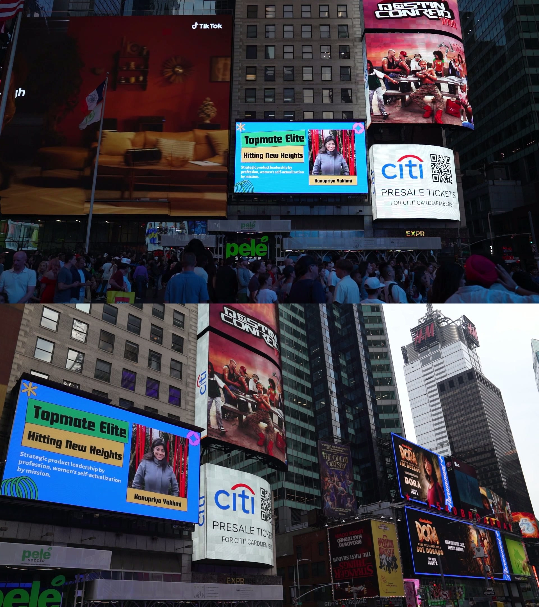

!DOCTYPE html
html lang=en class=scroll-smooth
head
meta charset=UTF-8
meta name=viewport content=width=device-width, initial-scale=1.0
KP - Product Vision & Impact v2
script src=httpscdn.tailwindcss.comscript
link rel=preconnect href=httpsfonts.googleapis.com
link rel=preconnect href=httpsfonts.gstatic.com crossorigin
link href=httpsfonts.googleapis.comcss2family=Interwght@400;500;600;700;800&display=swap rel=stylesheet
script src=httpsunpkg.comlucide@latestscript
style
body {
font-family 'Inter', sans-serif;
background-color #0f172a; slate-900
color #e2e8f0; slate-200
}
.section-title {
@apply text-4xl font-extrabold text-white mb-4;
}
.section-subtitle {
@apply text-lg text-slate-400 mb-12 max-w-3xl;
}
.glass-card {
@apply bg-slate-80050 backdrop-blur-lg border border-slate-700 rounded-xl p-8 transition-all duration-300 hoverbg-slate-80080 hoverborder-indigo-500;
}
style
head
body class=text-slate-300
!-- Header & Navigation --
header class=bg-slate-90080 backdrop-blur-lg sticky top-0 z-50
nav class=container mx-auto px-6 py-4 flex justify-between items-center
a href=# class=text-2xl font-bold text-white tracking-widerKP.a
div class=hidden mdflex items-center space-x-8
a href=#mission class=text-slate-300 hovertext-white transition-colorsMy Missiona
a href=#focus class=text-slate-300 hovertext-white transition-colorsAreas of Focusa
a href=#impact class=text-slate-300 hovertext-white transition-colorsStories of Impacta
a href=#leadership class=text-slate-300 hovertext-white transition-colorsLeadershipa
a href=#contact class=bg-indigo-600 text-white px-5 py-2 rounded-lg font-semibold hoverbg-indigo-500 transition-colorsLet's Talka
div
button id=mobile-menu-button class=mdhidden
i data-lucide=menu class=w-6 h-6 text-whitei
button
nav
!-- Mobile Menu --
div id=mobile-menu class=hidden mdhidden px-6 pb-4
a href=#mission class=block py-2 text-slate-300 hovertext-whiteMy Missiona
a href=#focus class=block py-2 text-slate-300 hovertext-whiteAreas of Focusa
a href=#impact class=block py-2 text-slate-300 hovertext-whiteStories of Impacta
a href=#leadership class=block py-2 text-slate-300 hovertext-whiteLeadershipa
a href=#contact class=block mt-2 bg-indigo-600 text-white px-4 py-2 rounded-lg hoverbg-indigo-500 text-centerLet's Talka
div
header
main
!-- Hero Section --
section id=hero class=py-24 mdpy-40
div class=container mx-auto px-6
div class=max-w-4xl
h1 class=text-5xl mdtext-7xl font-extrabold text-white leading-tight
I don't just build products. br I build possibilities.
h1
p class=mt-6 text-xl mdtext-2xl text-slate-400
My name is Kanupriya. You can call me KP. My work sits at the intersection of strategic product leadership and human potential. I architect systems and teams that drive business growth while championing self-actualization for women in technology.
p
div
div
section
!-- Mission Section --
section id=mission class=py-24 bg-slate-90050
div class=container mx-auto px-6
div class=grid mdgrid-cols-5 gap-12 items-center
div class=mdcol-span-3
span class=text-indigo-400 font-semibold tracking-wider uppercaseMy Missionspan
h2 class=text-4xl font-extrabold text-white mt-2Strategic leadership by profession, women's self-actualization by mission.h2
p class=mt-6 text-lg text-slate-300This isn't just a tagline; it's the operating system for my career. I believe the most powerful products are born from a clear, unwavering purpose. My purpose is to create environments, both in products and in teams, where women can achieve their highest potential.p
p class=mt-4 text-lg text-slate-300This commitment was unexpectedly illuminated in Times Square, an honor from topmate.io's Elite program. It was a profound reminder that when you lead with a powerful mission, your impact can be limitless. This is the energy and strategic focus I bring to every challenge.p
div
div class=mdcol-span-2
div class=bg-indigo-90030 p-4 rounded-lg shadow-2xl transform rotate-3
img src=
div
div
div
div
section
!-- Areas of Focus Section --
section id=focus class=py-24
div class=container mx-auto px-6
div class=text-center
h2 class=section-titleMy Passion, My Focush2
p class=section-subtitle mx-autoI am driven to solve complex problems in industries on the cusp of transformation. My expertise is centered at the convergence of data, human behavior, and technology.p
div
div class=grid mdgrid-cols-2 lggrid-cols-4 gap-8
div class=glass-card text-center
i data-lucide=brain-circuit class=w-12 h-12 text-indigo-400 mx-auto mb-4i
h3 class=text-xl font-bold text-white mb-2AI & Machine Learningh3
p class=text-slate-400Leveraging predictive analytics and intelligent systems to create smarter, more efficient products and unlock new possibilities.p
div
div class=glass-card text-center
i data-lucide=heart-pulse class=w-12 h-12 text-indigo-400 mx-auto mb-4i
h3 class=text-xl font-bold text-white mb-2Healthcare Technologyh3
p class=text-slate-400Building HIPAA-compliant platforms that empower clinicians, improve patient outcomes, and accelerate neurodegenerative disease research.p
div
div class=glass-card text-center
i data-lucide=graduation-cap class=w-12 h-12 text-indigo-400 mx-auto mb-4i
h3 class=text-xl font-bold text-white mb-2Educational Technologyh3
p class=text-slate-400Creating scalable digital learning platforms that democratize access to skills and empower a global workforce.p
div
div class=glass-card text-center
i data-lucide=car class=w-12 h-12 text-indigo-400 mx-auto mb-4i
h3 class=text-xl font-bold text-white mb-2Autonomous Systemsh3
p class=text-slate-400Pioneering safety and efficiency in autonomous vehicles through rigorous, data-driven product and program management.p
div
div
div
section
!-- Stories of Impact Section --
section id=impact class=py-24 bg-slate-90050
div class=container mx-auto px-6
div class=text-center
h2 class=section-titleStories of Impacth2
p class=section-subtitle mx-autoI translate vision into tangible results. Here are a few examples of how my leadership has created lasting value.p
div
div class=grid lggrid-cols-3 gap-8
!-- Impact 1 --
div class=glass-card
h3 class=text-2xl font-bold text-white mb-3Scaled a Global Movementh3
p class=text-slate-400 mb-4I architected the product strategy for a global non-profit, transforming their mission into a scalable platform. By launching five leadership products and instituting an OKR-linked roadmap, we grew the user base to 1.8 million and reduced churn by 13%, directly advancing the careers of women in tech.p
span class=inline-block bg-slate-700 text-slate-300 text-xs font-semibold mr-2 px-2.5 py-0.5 rounded-fullProduct Visionspan
span class=inline-block bg-slate-700 text-slate-300 text-xs font-semibold mr-2 px-2.5 py-0.5 rounded-fullCommunity Growthspan
div
!-- Impact 2 --
div class=glass-card
h3 class=text-2xl font-bold text-white mb-3Set a New Standard for AV Safetyh3
p class=text-slate-400 mb-4Leading a team of 20+ engineers and data scientists, I spearheaded a program to automate safety validation for autonomous vehicles. My leadership in building novel AIML systems cut validation costs by 10% and increased launch velocity by 15%, establishing a new industry benchmark.p
span class=inline-block bg-slate-700 text-slate-300 text-xs font-semibold mr-2 px-2.5 py-0.5 rounded-fullAIML Innovationspan
span class=inline-block bg-slate-700 text-slate-300 text-xs font-semibold mr-2 px-2.5 py-0.5 rounded-fullRisk Mitigationspan
div
!-- Impact 3 --
div class=glass-card
h3 class=text-2xl font-bold text-white mb-3Ignited Enterprise SaaS Growthh3
p class=text-slate-400 mb-4Tasked with accelerating five SaaS product lines, I executed a KPI-driven roadmap that drove over $2M in incremental revenue. I also designed and scaled a new Agile framework that was adopted organization-wide, improving team velocity by over 14% and transforming how the company built products.p
span class=inline-block bg-slate-700 text-slate-300 text-xs font-semibold mr-2 px-2.5 py-0.5 rounded-fullCommercial Strategyspan
span class=inline-block bg-slate-700 text-slate-300 text-xs font-semibold mr-2 px-2.5 py-0.5 rounded-fullProcess Architecturespan
div
div
div
section
!-- Leadership & Mentorship Section --
section id=leadership class=py-24
div class=container mx-auto px-6
div class=text-center
h2 class=section-titleLeadership & Mentorshiph2
p class=section-subtitle mx-autoMy passion for product is matched only by my passion for people. I believe a leader's true legacy is the success and growth of those they mentor.p
div
div class=grid lggrid-cols-3 gap-8
div class=glass-card flex flex-col justify-between
div
i data-lucide=quote class=w-8 h-8 text-indigo-400 mb-4i
p class=text-slate-300 text-lg mb-6KP’s guidance has been instrumental in my growth... Her unwavering belief in people, combined with her deep expertise and strategic thinking, sets her apart. She has a remarkable ability to see potential in others and to provide the right perspective at the right time.p
div
div
p class=font-semibold text-whiteAmruta Birarp
p class=text-sm text-slate-400Product Manager B2B SaaSp
div
div
div class=glass-card flex flex-col justify-between
div
i data-lucide=quote class=w-8 h-8 text-indigo-400 mb-4i
p class=text-slate-300 text-lg mb-6I struggled with interviews... but KP helped me build a clear story, structure my answers, and trust my thinking. She went beyond scripts, identified subtle gaps, and pushed me to think like a hiring manager. Thanks to her support and expertise, I highly recommend her.p
div
div
p class=font-semibold text-whitePalak Mehrotrap
p class=text-sm text-slate-400TPM Platform Strategy, Generative AIp
div
div
div class=glass-card flex flex-col justify-between
div
i data-lucide=sparkles class=w-8 h-8 text-indigo-400 mb-4i
h3 class=text-xl font-bold text-white mb-2Championing Future Innovatorsh3
p class=text-slate-300 text-lg mb-6As a judge for Project ECHO's Teen Business Plan Competition, I mentor the next generation of entrepreneurs. It's a privilege to help ignite that foundational spark of impactful product development by assessing their strategic clarity and market vision.p
div
div
p class=font-semibold text-whiteProject ECHOp
p class=text-sm text-slate-400Business Plan Judgep
div
div
div
div
section
!-- Contact Section --
section id=contact class=py-24 bg-slate-90050
div class=container mx-auto px-6 text-center
h2 class=text-4xl font-extrabold text-whiteLet's Build What's Next.h2
p class=mt-4 text-xl text-slate-400 max-w-2xl mx-auto
I am seeking a Director of Product role where I can build world-class teams and architect a market-defining product vision. If you believe in leading with purpose, let's talk.
p
div class=mt-10 flex flex-col smflex-row justify-center items-center gap-4
a href=mailtokanupriyayakhmi@gmail.com class=w-full smw-auto bg-indigo-600 text-white px-10 py-4 rounded-lg font-semibold hoverbg-indigo-500 transition-transform hoverscale-105 text-lg flex items-center justify-center gap-2
i data-lucide=maili
spanStart the Conversationspan
a
a href=httpswww.linkedin.cominkanupriyayakhmi target=_blank class=w-full smw-auto bg-slate-700 text-white px-10 py-4 rounded-lg font-semibold hoverbg-slate-600 transition-transform hoverscale-105 text-lg flex items-center justify-center gap-2
i data-lucide=linkedini
spanView My LinkedInspan
a
div
div
section
main
!-- Footer --
footer class=bg-slate-90050 border-t border-slate-800 text-slate-500 py-8
div class=container mx-auto px-6 text-center
p© span id=yearspan Kanupriya 'KP' Yakhmi. All Rights Reserved.p
div
footer
script
Initialize Lucide icons
lucide.createIcons();
Mobile menu toggle
const mobileMenuButton = document.getElementById('mobile-menu-button');
const mobileMenu = document.getElementById('mobile-menu');
mobileMenuButton.addEventListener('click', () = {
mobileMenu.classList.toggle('hidden');
});
Set current year in footer
document.getElementById('year').textContent = new Date().getFullYear();
script
body
html